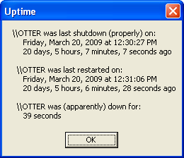

This sample demonstrates how to determine when the computer it's running was
last rebooted. There are really two strategies you can follow. The most straight
forward, and certainly the most accurate, is to query the creation time of the
winlogon.exe process. This process starts when Windows does, and that time can
be found with the GetProcessTimes API. Sounds simple, right? Well, there are a
few hoops you have to jump through, lemme tell ya. Probably easiest to take a
look at the code directly.
The other method sounds easy, and it actually is. Unfortunately, it's not
necessarily accurate. Windows writes its shutdown time to the registry every
time it's properly shutdown. You can snatch that value like this:
Public Function LastShutdown() As Date
Dim b() As Byte
Dim ft As FILETIME
Const HKEY_LOCAL_MACHINE = &H80000002
Const Key As String = "System\CurrentControlSet\Control\Windows"
Const Value As String = "ShutdownTime"
If RegGetBinaryValue(HKEY_LOCAL_MACHINE, Key, Value, b) Then
If UBound(b) = 7 Then
Call CopyMemory(ft, b(0), 8&)
LastShutdown = FileTimeToDouble(ft, True)
End If
End If
End Function
Yeah, there are a couple of custom helper routines there. As you might
imagine, RegGetBinaryValue grabs the bytes found at that registry location, and
FileTimeToDouble converts a FILETIME structure to the standard format used by
ClassicVB to store date/time values.
These two values, obtained with GetProcessTimes and from the Registry, may be
presented or otherwise used like this:

Also included in the download is a console utility I wrote (using
vbAdvance)
that displays this information at the command prompt via standard output. You
may find that useful for other scripting purposes.
Critical Update
On June 23, 2009, I discovered a critical bug in the MRegCalls.bas module. If
you downloaded this module before that date, please redownload now. Or, at the
least, modify the :
Public Function RegDeleteValue(ByVal RootKey As Long, ByVal Key As String,
ByVal Value As String) As Boolean
Dim nRet As Long
' Just delete this single value.
nRet = SHDeleteValue(RootKey, Key, Value)
' Return result of SHDeleteValue call.
RegDeleteValue = (nRet = ERROR_SUCCESS)
End Function
Previously, this function erroneously called the SHDeleteKey API - a
positively horrid cut/paste error. Worst still, perhaps, was the botched
declare. That needs to look like this:
Private Declare Function SHDeleteValue Lib "shlwapi" Alias "SHDeleteValueA" _
(ByVal hKey As Long, ByVal lpSubKey As String, ByVal lpValue As String) As Long
Please note, the problem with the original declare was that it used "SHDeleteKeyA"
as the alias name for the function. I am so sorry for allowing this oversight to be published.
Boy, am I sorry! I actually lost my HKEY_CURRENT_USER hive twice with
this nonsense. If that happens to you, the best recovery path I found was to
turn the machine off, then restart using the "Last Known Good" configuration.
Not sure how many chances you have for that, and it doesn't restore quite
everything. Guess that's why these registry articles always stress to
completely backup the registry before making any changes! <sigh>